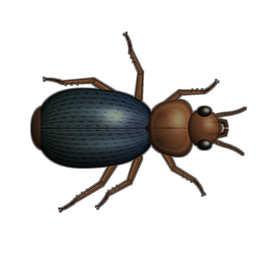

Oyun ve amaç
Oyun ve amaç
Colony, iki karınca kolonisi hakkında bir ekonomik strateji oyunudur: seninki ve bilgisayarın yönettiği rakibinki. Düşman karınca yuvası alanın merkezine göre ayna simetrisiyle yerleşir. Görevin: kaynakları ustalıkla toplamak, koloniyi geliştirmek ve rakibi kırmak.

Zafer ve yenilgi
- Zafer — düşmanın tek bir işçisi kalmadı (kuluçkadaki yumurtalar dahil) ve 5'ten az yiyeceği var, yani yeni bir işçi çıkaramaz.
- Yenilgi — aynısı senin kolonine oldu.
- Yapılar yıkılamaz: koloniler yalnızca birbirlerinin karıncalarını öldürür.
 Oyuna başlangıç
Oyuna başlangıç
Eğitim — ana menünün ilk öğesi: oyunun seni adım adım yönlendirdiği kısa bir ilk maç — kamera, işçiler, bölgeler, mağara, mimarlar, laboratuvar, bir teknoloji, depo, savaşçı, ağaç, tuzak ve saldırı. Alan küçük ve sakindir, düşman hiç saldırmaz, kaynaklar tüm adımlara yeter. Her adım geçilebilir.
Ana menüde başlamanın iki yolu var:
- Yeni oyun — olağan başlangıç:
 25 yiyecek ve
25 yiyecek ve  10 odun.
10 odun. - Bol kaynak modu — iki taraf da hemen 1500 yiyecek ve 500 odun alır: inşaat, araştırma ve savaş hemen başlar.
Bol kaynak modunda, yiyeceğin (en az 10) olduğu sürece bir silahlanma yarışı sürer: düşmandan fazla savaşçı alırsan, o da hemen aynı toplam güçte savaşçı çıkarır (Güçlü savaşçılar dahil) ve bu arada geliştirmelere hiçbir şey harcamaz. Güçler eşitken geliştirmelere ve depolara yalnızca senin rezervlerinin üstünde kalanı harcar. Böylece en hızlı zafer erken bir hücumla alınamaz.
Oyun sürerken menüde Devam et ve Yeniden (aynı harita baştan) de görünür. Ayrıca İstatistikler — tüm oyunlardaki sayaçların — ve en hızlı zaferlerin Steam Lider tabloları vardır.
Ardından oyun ayarları ekranı açılır; oyun Başla ile başlar. Seçimin hatırlanır.


Zorluk
Zorluk yalnızca bilgisayar rakibini değiştirir:
| Seviye | Ne değişir |
|---|---|
| Kaşif | Düşman savaşçı üretmez, tuzak kurmaz ve asla saldırmaz — alanı ve ekonomiyi rahatça keşfet. Bu modda başarım yoktur. |
| Kolay | Düşman %30 daha az toplar, tuzak kurmaz ve 6 dakikadan önce saldırmaz. |
| Normal | Düşman %10 daha az toplar ve 3 dakikadan önce saldırmaz. |
| Zor | Düşman en baştan tam güçle oynar. |
Harita ve görünürlük
- Harita: Küçük (800×600), Orta (1152×864), Büyük (1440×1080), Devasa (1728×1296). Daha büyük haritada orantılı olarak daha çok taş, bataklık ve çimen olur.
- Savaş sisi — yalnızca karınca yuvana, depolarına ve karıncalarına yakın yerler görünür. Keşfedilen arazi yarı görünür kalır; bulunan düşman yuvası ve depoları haritada kalır. Sisin içindeki patlamalar ve efektler görünmez. Genetik sıçramanın her seviyesi görüş mesafesini artırır.
- Tüm harita görünür — fare tekerleğiyle tüm alana kadar uzaklaştırabilirsin. Bu seçenek olmadan 800×600'den öteye gidilmez — alan kayar.
Dünya ayarları
Çevrenin ve yaban hayatının her öğesi açılıp kapatılabilir ve miktarı seçilebilir (Az / Normal / Çok): taşlar, bataklıklar, kütükler, göletler, dere, mağaralar, mantarlar, su örümcekleri, salyangozlar (yalnızca gölet veya dereyle), toprak böcekleri, örümcekler, peygamberdevesi, kızıl karıncalar, bombacı böcekler. «Varsayılan» olağan dünyayı geri getirir. Sağ altta — haritanın canlı önizlemesi.
Yuva yerini seçmek
Başla'dan sonra kamera alanın üzerinden geçer, sonra tek tıklamayla kolonin için yer seçersin. Altıgenler izin verilen yerleri gösterir; yuva merkeze ve kenarlara fazla yakın olamaz. Düşman ayna simetrisiyle belirir.
İlk iş en az bir işçi çıkarmaktır (ekranın altında ipucu var).

 Arayüz
Arayüz

- İnşaat — karınca çıkarma ve yapılar.
- Teknoloji — geliştirmeler, otomasyon ve tuzaklar (laboratuvar inşa edildikten sonra).
- Yiyecek ve Odun — rezervlerin.
- Alan — toplama alanları çiz: On — ekle, Off; tuşlar = / -.
- Saldırı — emir ve saldırı paneli. Mod — ormancılık, mantarcılık ve birim davranışı.
- Sağda — oyun süresi. Altta — ipucu satırı ve seçili karıncalar paneli.
Kamera
- Fare tekerleği — imlece doğru yakınlaştır/uzaklaştır (2,5×'e kadar).
- Basılı sağ tuş — alanı sürükle («tut ve çek»); kısa bir sağ tıklama yine seçimi iptal eder.
- Ok tuşları — alanı kaydır; basılı sağ (veya orta) tuş — alanı sürükle.
- Home — kendi yuvana dön.
Üzerine gelince ipuçları
İmleci bir karıncanın, bitkinin, mantarın, tuzağın, hayvanın veya yuvanın üzerine getir — bir kart çıkar: sağlık, yaş, büyüme, olgunlaşma, çürüme, tuzağın dolumu, kızıl karınca yuvasının erzakı vb.
 Kaynaklar
Kaynaklar
Yiyecek
Tohumdan büyür: olgunlaşan bir bitki grubu yeni tohumlar verir. İşçiler toplar. Uzun süre toplanmayan yiyecek odunlaşır ve oduna dönüşür.
Odun
Mimarlar toplar. Uzun süre toplanmayan yiyecekten oluşur ve göletlerin kıyısında saz olarak büyür. Laboratuvar, depolar, savaşçılar ve araştırmanın bir kısmı için gerekir.
 Mantarlar
Mantarlar
Yeni kaynak türü araştırmasından sonra başka bir yiyecek kaynağı. Ayrıntılar Mantarlar bölümünde.
Toplama ve teslim
- Karıncalar kaynakları yalnızca toplama alanlarında (veya doğrudan emirle) toplar ve en yakın depoya ya da yuvaya taşır.
- Yüklü bir karınca %30 daha yavaş yürür.
- Toplayacak bir şeyi olmayan boştaki karıncalar yuvanın üzerinde lekeler halinde yanıp söner.
Karınca patikaları
Koloninin karıncalarının sık geçtiği yerlerde çimen ezilip taneli kum bir patikaya döner. Kendi patikalarında karıncalar daha hızlı yürür — %15'e kadar. Terk edilmiş bir patika birkaç dakikada otla kaplanır. Düşmanın patikaları yalnızca alanı gördüğün yerlerde görünür.
 Birimler
Birimler
Karıncalar İnşaat panelinden çıkarılır: önce yuvanın çevresindeki kuluçkada bir yumurta belirir (aynı anda 16'ya kadar), karınca ondan çıkar. Shift + tuş tek seferde 16 karınca sipariş eder.
| Birim | Fiyat | Görev |
|---|---|---|
| İşçi E | 5 | Yiyecek ve mantar toplar. 1 sağlık puanı. |
 Mimar A Mimar A | 3 2 | Odun ve saz toplar. 1 sağlık puanı. Yeni oyunda ne sen ne de düşman, oyunun başlangıcından (ilk işçiden) sonraki ilk 30 saniye mimar çıkaramaz — oyun adil başlasın diye; bol kaynak modunda hemen. |
 Savaşçı W Savaşçı W | 35 10* | Saldırı ve savunma. Sağlık 10 (Güçlü savaşçılarla 15/20/25). Laboratuvar gerekir. |
* Güçlü savaşçıların her seviyesiyle savaşçı pahalanır: 35/15, 45/25, 50/30. Geliştirme yalnızca yeni savaşçılara uygulanır.

Sınır ve yaş
- En fazla 40 işçi ve 40 mimar; her depo her sınırı 10 artırır. Savaşçılar sınırsızdır.
- Karıncalar yaşlanır ve yaşlılıktan ölür — karttaki yaş çubuğu yeşilden kırmızıya geçer. Bataklıkta 10 kat hızlı yaşlanırlar.
- Saldırıda karıncalar her zamankinden %30 hızlı koşar.
İşçiler ve mimarlar da ısırır
Emirle işçiler ve mimarlar düşman karıncalara ve hayvanlara gönderilebilir. Zayıf ısırırlar (hayvanları bir savaşçıdan dört kat zayıf), ve ısırıkları geliştirilmez — savaşçı yokken son çare.
 Yapılar ve tuzaklar
Yapılar ve tuzaklar
 Karınca yuvası
Karınca yuvası
Ana yapı: oyun başlamadan önce kurulur. Kaynaklar buraya getirilir, karıncalar burada doğar.
 Laboratuvar L
Laboratuvar L
Yuvaya bir ek bina, yer seçmek gerekmez. Savaşçıları, araştırmayı ve tuzakları açar.
Fiyat: 35
Depo S
Kaynaklar için yakın bir teslim noktası ve işçi ile mimar sınırına +10. 5 depoya kadar, Daha fazla depo yenilerini ekler.
Fiyat: 25
 Tuzak B
Tuzak B
Bir mayın: üzerine yabancı bir karınca veya hayvan basınca patlar.
Fiyat: 1 1
Depo nereye kurulabilir
- Yalnızca yuvanın veya başka bir deponun menzilinde — depo ağı adım adım büyür (menzil kesik çizgili dairelerle gösterilir).
- Büyüyen kaynaklara fazla yakın değil.
- Kütük, mantar, gölet ve saz, dere, kızıl karınca yuvaları, tuzaklar, yiyecek, odun ve örümcek ağları üzerine değil. Gölet kıyısına kurulabilir.
- Düşman da aynı kurallara uyar.
Bir depo, tuzak veya alan bir yere kurulamıyorsa imlecin yanında nedenini söyleyen bir ipucu çıkar: «Karınca yuvasına çok yakın», «Yalnızca kendi bölgelerinde», «Burada toplanacak bir şey yok» vb.
Tuzaklar
- Yalnızca kendi toplama alanlarının içine, alanın kendi yarına kurulur — yer seçerken alanlar sahada görünür.
- Kurulduktan sonra tuzak dolar (yaklaşık 17 saniye, ilerleme kartta görünür), sonra kurulur.
- Düşman karıncalarında, yaban hayatında ve kızıl karıncalarda çalışır. Patlama çevredeki karıncaları, bir örümceği, bir toprak böceğini, bir su örümceğini öldürür; peygamberdevesinden 60 sağlık götürür.
- Düşmanın tuzakları da aynı derecede tehlikelidir. Düşman Normal zorluktan itibaren tuzak kurar.
- Tuzaklar otomasyonu onları kendisi kurar.
 Araştırma
Araştırma
Teknoloji paneli T laboratuvar inşa edildikten sonra açılır. Solda geliştirmeler (üç seviye), sağda otomasyon.

| Geliştirme | Sv. I | Sv. II | Sv. III | Etkisi |
|---|---|---|---|---|
 Hasat artışı Hasat artışı | 50 | 80 | 120 | Bitkiler daha hızlı büyür ve daha çok olur. |
 Manevra Manevra | 35 | 20 | 70 | Manevra saldırı türünü açar — savaşçılar düşmanı bir yay çizerek dolanır ve yandan vurur; her seviyede daha hızlı. |
| Genetik sıçrama | 75 | 85 | 95 | Karınca hızı ×1,2 / ×1,4 / ×1,6 ve siste görüş mesafesi. |
 Güçlü savaşçılar Güçlü savaşçılar | 35 20 | 45 30 | 50 7 | Yeni savaşçıların 10 yerine 15 / 20 / 25 sağlığı olur. |
 Depo artışı Depo artışı | 15 5 | 45 8 | 60 11 | Yiyecek ve odun üretimi: depolardan +%5 / +%10 / +%18 gelir. |
 Daha fazla depo Daha fazla depo | 30 15 | 50 25 | 75 40 | Her seviyede beşin üstüne +1 depo. |
 Yeni kaynak türü Yeni kaynak türü | 60 | 125 | 180 | I — işçiler mantar toplar, alanlar mantarların üzerine kurulabilir; II — bizim yarıdaki mantarlar %20 daha hızlı büyür; III — %20 daha çok büyür. |
— yiyecek, — odun. Düşman da aynı teknolojileri araştırır.
 Otomasyon
Otomasyon
Teknoloji panelinin sağ sütunundan bir kez satın alınır. Çoğu daha sonra Oto / Elle düğmesiyle açılıp kapatılır.
Alanlar
Toplama alanları kaynakların çevresine otomatik kurulur.
25 yiyecek
 Ormancılık
Ormancılık
Çalılığın bir kısmı otomatik olarak toplanmaz — oduna dönüşür.
10 odun
 Mantarcılık
Mantarcılık
Kendi yarındaki misellerde mantarların ~%40'ı bırakılır — miseller daha hızlı büyür. Yeni kaynak türü I gerekir.
30 yiyecek
 İnşaat
İnşaat
Otomatik çıkarma: koloni gereken karıncaları kendisi çıkarır.
10 yiyecek
 Saldırı
Saldırı
Planlı saldırı: koloni kendisi savaşçı toplar ve yeterince güçlüyken saldırır.
25 yiyecek
 Tuzaklar
Tuzaklar
Oto-tuzaklar: kaynak olduğu sürece tuzaklar kendiliğinden kurulur.
10 yiyecek
Mod ve toplama alanları
Toplama alanları
Alan'a (veya =) bas ve sahaya alanlar çiz — karıncalar onların içinde toplar. - — alanları kaldır. Kaynaklar depodan uzaksa, yakına bir depo kurulana kadar oraya alan koymamak daha iyidir.
Mod paneli
- Ormancılık F — işçilerin dokunmayacağı bitkileri işaretle: oduna dönüşecekler. İmleçte «+» — işaretle, «−» — işareti kaldır.
- Mantarcılık G — aynı şekilde toplanmayacak mantarlar işaretlenir.
- Birim davranışı:
- Herkese saldır — boştaki savaşçılar işçileri korur: onlara saldıran her hayvana veya düşmana atılırlar.
- Hasat — tüm güç kaynak toplamaya.

 Emirler ve seçim
Emirler ve seçim
Seçim
- Çerçeve: sahada sol tuşu basılı tut ve yeşil bir çerçeve çiz — içindeki karıncalar seçilir (varsa savaşçılar, yoksa mimarlar, yoksa işçiler).
- Tab — tüm savaşçılarını seç.
- Seçilenler sol altta görünür: her karınca için sağlık çubuklu bir kutucuk, sayıları ve toplam güçleri.
- Sağ tuş — seçimi iptal et ve açık panelleri kapat.
- Seçili karıncalar yalnızca sana itaat eder: koloni savunması, Herkese saldır ve oto-saldırı onları almaz.
Nereye tıklanabilir
Sahaya
Karıncalar noktaya gider (hareketli kesik çizgi) ve orada bekler.
 Nöbet noktası
Nöbet noktası
Savaşçılar oradayken aynı noktanın yanına ikinci bir tıklama bir nöbet noktası kurar: savaşçılar yeri tutar, yaklaşan düşmanları vurur ve geri döner. Noktanın üzerinde bir bayrak durur, kesik çizgili halka «nefes alır». Nöbeti yalnızca bu savaşçılara verilen yeni bir emir kaldırır. İkinci tıklamadan önce bir ipucu bayrağı noktaya tekrar tekrar düşer.
Yiyeceğe / mantara
İşçiler yakındaki yiyeceği, alanların dışında da olsa toplar ve eve taşır. Mantarı kemirirler (mantarlar araştırıldıysa).
 Oduna
Oduna
Mimarlar yakındaki odunu toplar.
 Düşmana / hayvana
Düşmana / hayvana
Seçilenler hedefe saldırır (kırmızı kesik daire). Hedef ölürse yuvadaki yavrulara geçerler, yoksa beklerler.
İmleçteki yeşil nişangâh karıncaların nereye gönderilebileceğini gösterir. Karıncalar emri seçim iptal edildikten sonra da yerine getirir, ardından olağan işlerine döner. Bir düşmana tıklanarak verilen saldırılar da grafiklerde görünür.
 Saldırı
Saldırı
Saldırı paneli:
- Üstte — karıncalarının türü (tıklama değiştirir), altında — saldırılacak düşman karıncaların türü.
- «‹ 1 ›» — kaç karınca gönderilecek (basılı tutmak — hızlı). Seçilenler bir halkayla işaretlenir.
- Saldır — birliği gönder.
- Saldırı türü: Doğrudan — cepheden; Manevra — yay çizerek dolanma (Manevra araştırması gerekir).
- Sürekli saldırı — savaşçılar düşmana durmadan gönderilir; panel açık kalır ve kaçının «saldırıda» olduğunu gösterir.

Savaş
- Herkesin sağlığı aynı birimlerle ölçülür: işçi ve mimar — 1, savaşçı — 10…25.
- Bir savaşçının sağlığı çevresindeki taç yapraklardan görülür: senin savaşçılarında kırmızı-turuncu, düşmanınkilerde mavi.
- Saldırı paneli kapalıyken bekleyen karıncalar işe döner.
- Koloniye saldırıldığında alarm çalar ve müzik savaş müziğine geçer.

 Çevre
Çevre
| Nesne | Geçilebilir | Özellikler |
|---|---|---|
| Taşlar | Hayır | Etrafından dolanılır; örümcekler ağlarını taşlara örer. |
 Bataklıklar Bataklıklar | Evet, 4 kat yavaş | Karıncalar 10 kat hızlı yaşlanır. Yakınında mantarlar daha hızlı ve sık büyür. |
 Kütükler Kütükler | Evet | Bazılarının altında — toprak böceği inleri; kütüklerin yanında mantarlar büyür. Kütüğün üzerine depo kurulamaz. |
 Mantarlar Mantarlar | Evet, iki kat yavaş | Mantarın üzerine depo kurulamaz. |
 Göletler Göletler | Hayır (su) | Verimli kıyı: bitkiler daha hızlı büyür ve daha çok tohum verir. Kenardaki saz hazır odundur ve çabuk yeniden büyür. Her gölette bir su örümceği yaşar; sudan salyangozlar çıkar. |
 Dere Dere | Yalnızca geçitlerden | Alanı boydan boya keser. Geçitler taştan veya kütükten, 3 sıra geniştir; hem karıncalar hem hayvanlar kullanır. |
 Örümcek ağı Örümcek ağı | Evet, yaklaşık 3 kat yavaş | Ağın sahibi yaklaşan herkese atılır. |


Bir ila dört gölet olur ve iki taraf eşit pay alır: biri ortada, çiftler ayna simetrisiyle. Haritada dere varsa, ondan yakın göletlere yan kollar ayrılır — gölete dökülen dar kanallar (iki yarıda da ayna simetrisiyle). Kanal da dere gibi geçilemez: göletin etrafından dolanılır.
 Mağaralar
Mağaralar


Alanda mağaralar olabilir (dünya ayarları: Az / Normal / Çok — 2, 4 veya 6, çiftler halinde: her yarıda bir). Her birinin görünüşü farklıdır: taş, kara toprak, kil, köklerin altı, kumtaşı, kireçtaşı, turba; içeriden bir ışık parlar — her mağarada başka.
- 10 işçi veya mimar seç ve mağaraya tıkla: tam olarak en yakın 10'u gider. 10'dan azıyla keşif başlamaz. Savaşçılar mağaraya girmez.
- İçeride karıncalar koloniye ait kalır (sınırda ve zaferde sayılır) ama hiçbir şey toplamaz. Keşif yaklaşık 90 saniye sürer; mağaranın üstünde bir ilerleme halkası görünür.
- Sonuç: şans — 500 yiyecek, ya da 200 odun, ya da 300 yiyecek ve 75 odun; hiçbir şey — karıncalar sadece dışarı çıkar; talihsizlik — karıncalar kaybolur. Her durumda giriş çöker: mağara keşfedilmiştir ve artık parlamaz; birkaç dakika sonra da tamamen kaybolur.
- Yolda onlardan biri bile ölürse, diğerleri geri döner ve mağara keşfedilmemiş kalır.
- Düşman da yarısındaki mağaraları, karınca ayırabildiğinde keşfeder: yiyeceği boldur ise işçi, yoksa mimar gönderir.
- Ekip içerideyken mağaradan duman yükselir.
- Bir haritadaki tüm mağaralar farklıdır: türü, ışığı ve ışığın rengi tekrarlanmaz. Her birinin çevresinde kendi toprağı renginde toz vardır.
- Sonuçlar maç özetindeki «Mağaralar» satırında ve ana menü → İstatistikler'de (7 türden hangilerini keşfettiğin de orada görünür). Mağaraların üç başarımı var: «Hazine», «Tüm derinlikler» ve «Hiçbirini atlama».
 Ağaçlar
Ağaçlar

Sahada ağaçlar yetişir — meşeler ve çamlar (dünya ayarlarında: Az — ortada iki tarafın ortak kullandığı bir ağaç; Normal — her yarıda bir; Çok — her yarıda üç). Maçın başında küçüktürler ve zamanla büyürler.
- Mimarlar kendi yarılarındaki ağaçların dallarını kendiliğinden kemirir (bir ağaçta en fazla 3). Kemirilen dal düşer ve altında bir yığın odun bırakır: mimarlar onu her zamanki gibi taşır, toplama bölgesi gerekmez. Ağaç ne kadar büyükse dal o kadar çok odun verir.
- Kemirilen dal birkaç dakika sonra yeniden çıkar — önce küçük.
- Ağaç zaman zaman rüzgârda sallanır: kimsenin kemirmediği dallardan palamutlar (meşe, yiyecek) ya da kozalaklar (çam, odun) düşer. Palamudu ya da kozalağı bir mimar taşır; öldürülürse yük yerde kalır ve onu başka biri alır.
- Seçim sizin: bir ağacı «Ormancılık» aracıyla işaretleyin, mimarlar onu kemirmeyi bırakır — yalnızca meyve verir. Düşman kendi karar verir: yeterince odunu olduğu sürece ağaçlarını meyveleri için korur. Otomatik ormancılık ağaçlara dokunmaz ve seçiminizi değiştirmez.
- Eşek arıları. Zamanla büyümüş bir ağaçta bir eşek arısı yuvası
 belirir. Arılar
belirir. Arılar  ağacın üstünde döner ve altındaki her karıncayı sokar: bir işçi ya da mimar hemen ölür, bir savaşçı yaralanır. Yüksekteki arıya ulaşılamaz — savaşçılar yalnızca sokmak için dalan arıyı ısırabilir. Arılar yaşadıkça mimarlar ağaca yaklaşmaz. Arıları savaşçılarla öldürün; mimarlar yuvalı dalı kemirir («Ormancılık» ile işaretli ağaçta bile): yuva düşüp parçalanır, larvalarını (her biri 5 yiyecek) işçiler ve mimarlar eve taşır. Birkaç dakika sonra yeni bir yuva belirebilir. Düşürülen yuvalar ve öldürülen arılar oyun sonucunda ve İstatistikler’de sayılır; ilk düşürdüğün yuva «Arı yuvası» başarımını kazandırır. Arılar dünya ayarlarından kapatılabilir («Yaban hayatı» grubundaki «Eşek arıları» kutusu; ağaç yoksa arı da olmaz).
ağacın üstünde döner ve altındaki her karıncayı sokar: bir işçi ya da mimar hemen ölür, bir savaşçı yaralanır. Yüksekteki arıya ulaşılamaz — savaşçılar yalnızca sokmak için dalan arıyı ısırabilir. Arılar yaşadıkça mimarlar ağaca yaklaşmaz. Arıları savaşçılarla öldürün; mimarlar yuvalı dalı kemirir («Ormancılık» ile işaretli ağaçta bile): yuva düşüp parçalanır, larvalarını (her biri 5 yiyecek) işçiler ve mimarlar eve taşır. Birkaç dakika sonra yeni bir yuva belirebilir. Düşürülen yuvalar ve öldürülen arılar oyun sonucunda ve İstatistikler’de sayılır; ilk düşürdüğün yuva «Arı yuvası» başarımını kazandırır. Arılar dünya ayarlarından kapatılabilir («Yaban hayatı» grubundaki «Eşek arıları» kutusu; ağaç yoksa arı da olmaz). - Bir taç altında karıncalar varken taç yarı saydam olur.
Mantarlar
Miseller kütüklerin yanında, özellikle de bataklıkların yanında büyür. Mantarlar Yeni kaynak türü araştırmasından sonra toplanabilir.
Nar mantarı
En büyüğü: 13 yiyeceğe kadar.
Çörek mantarı
Büyük: 11 yiyeceğe kadar.
 Sinek mantarı
Sinek mantarı
Orta: 6 yiyeceğe kadar.
 Horozmantarı
Horozmantarı
Küçük: 4 yiyeceğe kadar.
- Mantar ne kadar büyükse o kadar çok yiyecek verir, ama kemirmesi de o kadar uzun sürer. İşçiler yalnızca olgun mantarları alır; gençler büyümeye devam eder ve miseli besler.
- Mantarın üzerinde bir ilerleme dairesi görünür; eve kemirilmiş bir parça taşınır. Toplanmayan mantar zamanla çürür ve kaybolur.
- Misel iplikler uzatır; iki miselin iplikleri buluştuğu yerde yenisi doğar. Bataklığa ulaşan iplik ondan su içer — böyle bir miselde mantarlar 1,7 kat, ona bağlı olanlarda 1,35 kat daha sık çıkar.
- Birleşmiş misel ağı ne kadar uzunsa mantarlar o kadar sık çıkar (2,5×'e kadar) ve o kadar büyük olur.
- Bir miselin yarısından fazlası yenirse yeni mantarlar kat kat daha yavaş çıkar; tamamen hasat edilmiş bir misel çok uzun sürede toparlanır.
 Yaban hayatı
Yaban hayatı
Hayvanlar ne senin ne de düşmanındır ve iki yuvadan da uzakta yaşar. Herkese saldır seçiliyse boştaki savaşçılar işçilerine saldıran hayvana kendiliğinden koşar. Yeterli savaşçısı olan düşman, onu rahatsız eden hayvanlara bir av planlar.
Bahçe örümceği
Ağını taşlara örer ve ortada bekler; yaklaşan her karıncaya atılır ve avı bir kozada götürür. İşçiyi veya mimarı tek ısırıkla öldürür. Kozalardan (1 savaşçı + 1 işçi veya 3 işçi) yavrular çıkar. Ağır yaralanan son örümcek başka taşlara kaçar ve yeni ağ örer. Bir örümceğe saldırılırsa bütün aile savaşçılara atılır. Dereyle ayrılmış bir örümcek bir geçitten yol arar.
 Toprak böceği
Toprak böceği
Kütüğün altındaki bir inde yaşar ve yalnız karıncaları avlar (üç ve fazlası gruplara dokunmaz). Sıradan bir karıncadan hızlıdır — ancak ikinci Genetik sıçramadan sonra ondan kaçılabilir. Sert kabuk: savaşçılar onu daha yavaş yaralar. Yaralanınca ine saklanır ve iyileşir; yavrusu yoksa boş bir kütüğe kaçıp yeni bir in kazabilir. Derenin öbür yakasındaki avı kovalamaz.

 Salyangoz
Salyangoz
Ara sıra bir göletten veya dereden çıkar ve alanda yavaşça sürünür (taşların ve tepelerin etrafından dolanarak, parlak bir iz bırakarak) — çoğunlukla suyun yanında, ama bazen «yorgun» uzaklara gider. Ne kadar uzun sürünürse o kadar büyür: 6 evre; sudan ilk üçünden birinde çıkar. Yiyeceğin üzerinden geçerse onu yer — 10 parçaya kadar, sonra dinlenir. Salyangozu işçiler ve mimarlar kemirir (onları bir mantara gönderir gibi gönder); savaşçılar onu yaralamaz. Salyangoz ne kadar büyükse o kadar çok yiyecek verir — ne kadar olduğu kartta yazar; yiyecek, yanında karıncası daha çok olan tarafa gider. Dünya ayarlarında: Salyangozlar — Az / Normal / Çok (yalnızca gölet veya dereyle).

Bombacı böcekYuvası olmayan barışçıl bir gezgin: bütün alanı kısa koşular ve molalarla dolaşır, karınca yuvalarından uzak durur ve kimseye dokunmaz. Savaşçılar ona kendiliğinden saldırmaz — yalnızca senin emrinle (böceğe sağ tıkla). Bir veya iki savaşçı onu güvenle öldürür: yalnızca yavaşça uzaklaşır. Ama aynı anda üç veya daha fazla karınca ısırırsa arkaya doğru sıcak bir bulut püskürtür: buluttaki işçiler ve mimarlar ölür, savaşçılar −6 alır ve savrulur. Sonra 5 saniye doldurur ve kaçar — bu sürede savunmasızdır. Kalabalıkla saldırmak, iki savaşçıyla saldırmaktan kötüdür. Böcekler alanın kenarından gelir: ilki yaklaşık bir buçuk dakika sonra, sonraki birkaç dakika sonra. Düşman onu avlamaz. Dünya ayarlarında: «Bombacı böcek» — Az / Normal / Çok (alanda aynı anda 1 / 2 / 3 böcek; Çok seçiliyken yenileri daha çabuk gelir).
 Peygamberdevesi — boss
Peygamberdevesi — boss
Kaç tane olacağını dünya ayarları belirler: Az — bir, Normal — iki (küçük haritada bir), Çok — ikiden dörde. Tarafsız şeritte, çimenin içinde neredeyse görünmez halde pusuda bekler. Kıskaç bacaklarının menzilindeki her karıncaya şimşek gibi vurur: bir işçi ölür, bir savaşçı 8 sağlık kaybeder. Etrafındaki herkese karşı aynı anda savunur — kalabalık bir savaşçı sürüsü gerekir. Öldüğü anda bedeninin yanında daha çok savaşçısı olan taraf 60 yiyecek alır. Bir tuzak ondan 60 sağlık götürür. Öldürülen peygamberdevesi bir daha çıkmaz.

 Su örümceği
Su örümceği
Gölette kayar ve kıyının dibinde yürüyen bir karıncanın yiyeceğini veya odununu düşürür — yük batar. Yakında bir savaşçı olan yere (~70'ten yakın) asla yüzmez, bu yüzden göletin yanındaki bir devriye alanı kıyıyı korur. Öldürülen su örümceğinin yerine zamanla yenisi gelir.
 Kızıl karıncalar
Kızıl karıncalar
Tarafsız bir koloni: ortada bir yuva (Az), ayna simetrisiyle iki (Normal) ya da her yarıda ikişer (Çok). Kızıllar evlerinin çevresinde kırıntı toplar ve kimse onlara dokunmadıkça kimseye dokunmaz.
- Yuvaya yaklaşan savaşçılar yalnızca kovalanır — savaş olmadan.
- Savaşçıları bir kızıl karıncaya veya yuvaya saldıran taraf kan davası kazanır: yuvanın yanındaki karıncalarına saldırılır, ve ara sıra bir kızıl birliği işçilerine baskına çıkar.
- Yıkılan yuva tüm yiyecek erzakını yakında daha çok savaşçısı olan tarafa verir. Erzak kartta görünür.
- Kızıl karınca yuvalarının yanında yiyecek ve mantar büyümez; devriyeler etraflarından dolanır.
Yeni koloniler
Bir yuva 200 yiyecek biriktirince bundan 75'ini ve karıncalarının yarısını yeni bir koloniye verir: birlik aynı kıyıda boş bir yere gider (harita oluşturulurken olduğu gibi — su, taş, mantar, yiyecek, depo, tuzak, başka kızıl yuvaları ve senin kolonilerinin yanına değil; yer yolda bozulursa başkası seçilir). Yolda birliğin yarısından fazlası öldürülürse kalanlar eve kaçar. Varınca karıncalar çubuk taşır ve yuva 8 evrede büyür (kartta «İnşa ediliyor: %N»); inşaat yıkılabilir. Bitince kendi erzakı olan sıradan bir kızıl karınca yuvasıdır. Toplamda haritada en fazla 3 / 4 / 5 / 7 kızıl yuvası olur — küçükten devasa haritaya; ama her zaman başlangıçtakinden en az iki fazla.

Düşman
Bilgisayar rakibi aynı kurallarla oynar: karınca çıkarır, bir laboratuvar ve bir depo zinciri kurar, alanlar koyar (kırmızı kesik çizgi), araştırma yapar, tuzak kurar, saldırır ve dereyi geçitlerden geçer.
- Yeterli savaşçısı varsa rahatsız eden hayvanları avlar.
- Saldırgan modda işçilerini korur.
- Davranışı seçilen zorluğa bağlıdır.

 Sonuçlar ve grafikler
Sonuçlar ve grafikler
Zafer veya yenilgiden sonra sonuç ekranı açılır: oyun süresi, zorluk ve harita boyutu, Yeniden ve Menüye düğmeleri. Zafer veya yenilgi melodisinden sonra yine ana menü müziği çalar.
- Özet — elde edilen kaynaklar, türe göre yok edilen ve kaybedilen karıncalar, araştırılan teknolojiler, tuzaklar (kurulan / yok edilen / düşmanın), koloniler tarafından öldürülen hayvanlar.
- Grafikler — iki tarafın karınca sayısı ve kaynakları zamana göre. Kılıçlar saldırıları işaretler: simgenin yanındaki sayı kaç farklı karıncanın katıldığıdır (bir düşmana tıklanarak verilen saldırılar da sayılır).
İstatistikler ve lider tabloları
- İstatistikler (ana menü) — tüm oyunlardaki sayaçlar: oynanan oyunlar (bir oyun 2 dakikalık oyundan sonra veya daha erken biterse sayılır), zorluğa göre zaferler ve yenilgiler, oynama süresi, toplanan kaynaklar, yok edilen ve kaybedilen karıncalar, depolar ve tuzaklar, yenilen hayvanlar. Sayaçlar oyunun yanında ve Steam'de saklanır.
- Lider tabloları — her zorluk, harita boyutu ve mod (normal / zengin) için en hızlı zafer: dünya sıralaması ve Steam arkadaşların. Zaferden sonra sonuç ekranı sıranı gösterir. Kaşif modundaki sonuçlar kaydedilmez.
 Ayarlar
Ayarlar
- Ses ve Müzik — aç/kapat ve çubuklarla ses düzeyi (%10'luk adımlar).
- Kaydırma — ekran kenarında ve ok tuşlarıyla alan kaydırma hızı: %50 — normal, %100 — iki kat hızlı, %0 — alan kenarda kaymaz (yalnızca sürükleyerek).
- Tam ekran — Açık (varsayılan): oyun ekranı kaplar; Kapalı: pencerede. Alt+Enter ile de değiştirilir.
- Çözünürlük — tam ekran için, 4K'ya kadar açılır liste (varsayılan — masaüstü çözünürlüğü).
- Dinamik menü arka planı — Açık: ana menüde video oynar; Kapalı (varsayılan): sabit ilk kare gösterilir.
- Dil — 9 dil: Rusça, İngilizce, Ukraynaca, Almanca, Fransızca, İspanyolca, Portekizce, Lehçe, Türkçe.
- Kısayol tuşları — her tuş yeniden atanabilir; «Varsayılan» olağanları geri getirir.
Müzik duruma uyum sağlar: menü, sakin oyun, savaş, zafer, yenilgi.
 Kısayol tuşları
Kısayol tuşları
Varsayılan tuşlar (ayarlardan değiştirilebilir):
| Tuş | Eylem | Tuş | Eylem |
|---|---|---|---|
| E | İşçi | T | Teknoloji paneli |
| A | Mimar | F | Ormancılık |
| W | Savaşçı | G | Mantarcılık |
| Shift+E/A/W | Tek seferde 16 karınca | = / - | Alan ekle / kaldır |
| L | Laboratuvar | Tab | Tüm savaşçıları seç |
| S | Depo | Home | Koloniye dön |
| B | Tuzak | Esc | Ana menü |
| Alt+Enter | Tam ekran / pencere |
Fare: sol tuş — seçim, çerçeve, emir; sağ — tıklama seçimi iptal eder ve panelleri kapatır, basılı tutulunca alanı sürükler; tekerlek — yakınlaştırma; orta tuş — o da alanı sürükler.
İpuçları
- Birkaç işçiyle başla, 30 saniye sonra da birkaç mimar ekle: laboratuvar için 35 ve depo için 25 odun, başlangıcın kilit aşamasıdır.
- Depoları yuvadan uzak zengin yerlere kur — teslimat kısalır ve patikalar karıncaları hızlandırır.
- Herkese saldır'ı aç ve toplama alanlarının yanında birkaç savaşçı tut — işçileri örümceklerden, toprak böceklerinden ve su örümceklerinden korurlar.
- İşçileri bataklıklardan geçirme: orada yavaşlar ve hızla yaşlanırlar.
- Kızıllara gereksiz yere dokunma — kan davası işçilerine baskınlar getirir. Ama yıkılan bir yuva tüm yiyecek erzakını verir.
- Peygamberdevesine büyük bir kalabalıkla git ya da onu tuzaklara çek — 60 yiyecek buna değer.
- Savaşçıları bir toplama alanının yanında nöbete koy (aynı noktaya ikinci tıklama) — dağılmazlar ve işçileri korurlar.
- Yiyeceğinin üzerinde sürünen büyük bir salyangoza işçi gönder — 70 yiyeceğe kadar verir.
- Depo artışı rezervin yüzdesi olarak çalışır — kaynağın çok olduğunda daha kârlıdır.